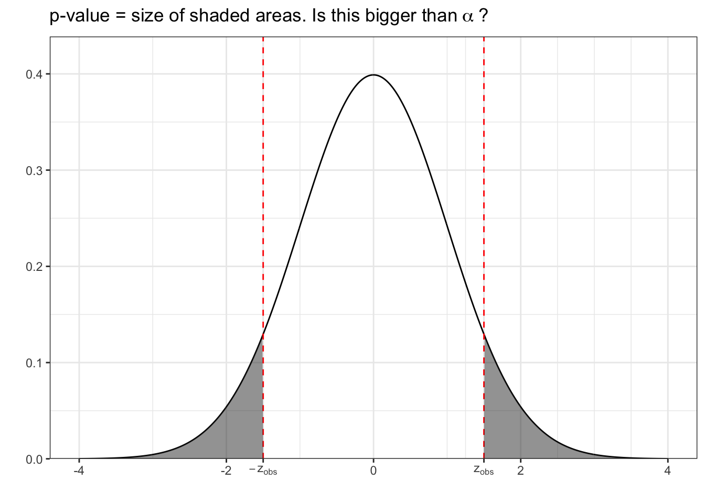
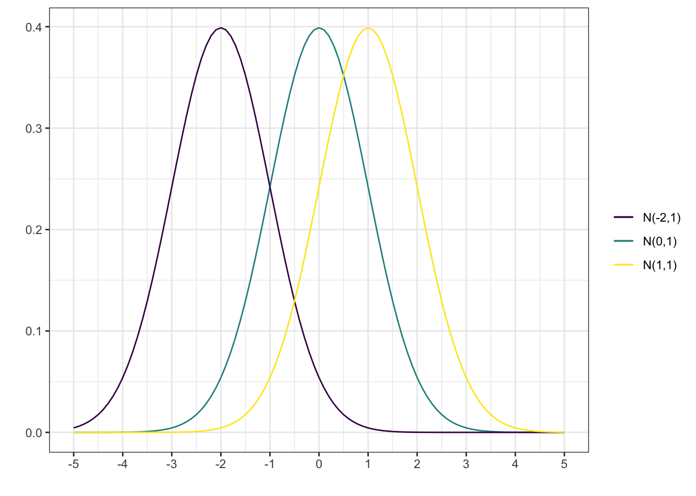
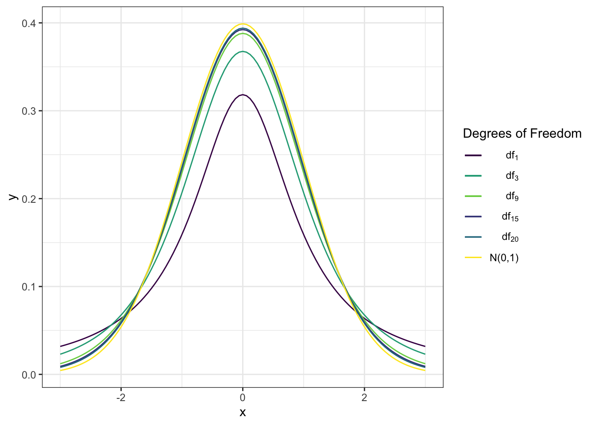
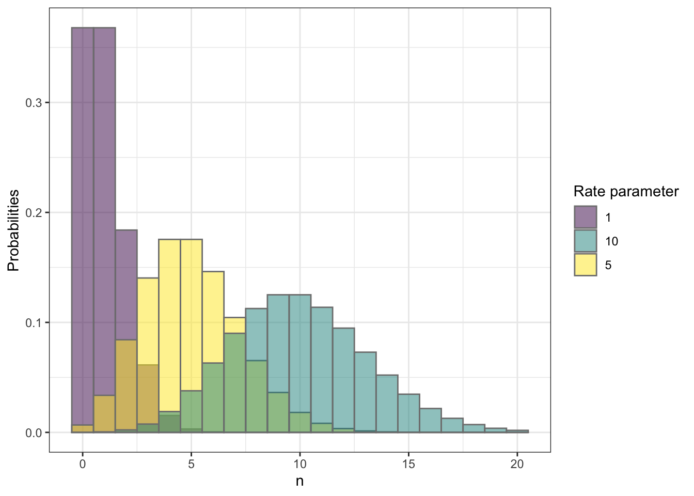
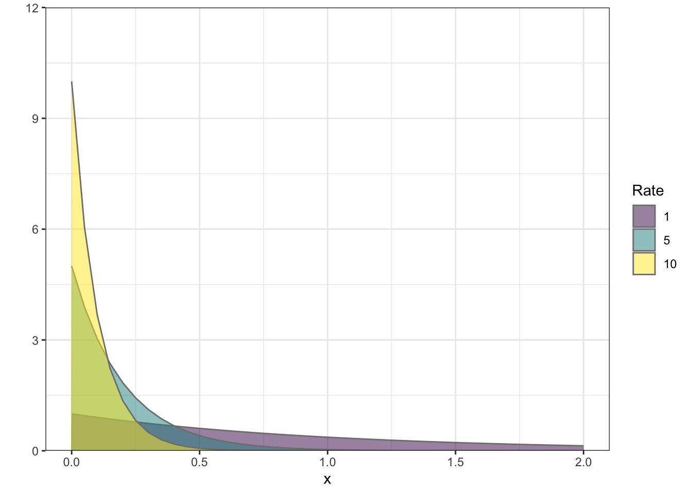

8 Estimators and their distributions
In Part I, we discussed how we can describe and summarize collected data. Different research questions lead you to collect different types of data, and depending on the type of data, there are different ways to present it.
So far in this part, we’ve talked about this super abstract concepts, such as probability random variables and distributions that at have nothing to do with the real world. So why did we spent so much time talking about these things?
In this section, we will see how random variables and distributions can help us answer questions about the data we collect in the real world. With a few assumptions we will be able to talk about probabilities of real world events, and later on we will use these probabilities to answer questions such as “is it likely that the mean heights of adult men and women in the US are the same?”
8.1 What is an Estimator?
Recall the setup: on one hand, we have a population that we are interested in. In this population, there’s some feature that we would like to learn more about. This could be either a continuous measurement (such as height, blood pressure, glucose level, etc), or discrete (marital status, disease status, etc). If we could go out and simply inspect every individual in this population, we could learn the truth. We could find out exactly what proportion of the population have a certain disease, what is the mean glucose level among non-diabetics, and so on. Unfortunately, this is not feasible.
What we do instead is we get a sample of individuals from the population. We do this in a way that ensures that this sample is representative of the population, meaning things we might observe in the sample are close to what we would observe in the population, if we had the chance.
After collecting a representative sample, we think for a second about exactly what parameter of the population is of interest to us, and then we pick “something” we can actually calculate based on our sample that is close to the parameter of interest. This “something” is what we call the estimator – it is our best guess of what the parameter is based on a sample.
An important thing to realize here is that an estimator is a random varaible. The specific value of it depends on the sample we get, which by nature is random. Therefore, repeating the experiment leads to a different value of the estimator. The hope is that the estimator doesn’t vary too much when repeating the experiment, and that the estimator is actually close to the true value of the population parameter.
Since an estimator is a random variable, we can talk about the distribution of an estimator. This plays a crucial role when creating confidence intervals and testing hypotheses, as we will see later on in the course. To find the distribution of an estimator, one can take two routes:
- perform the experiment over and over and over and over again, each time calculating the observed value of the estimator, then drawing a histogram, which in the end will give you the distribution of the estimator,
- make some assumptions, do some math.
The first strategy, as stated here, is not super useful – we can’t possibly afford to repeat every single experiment we do enough times to get enough observed values of the estimator to actually draw a histogram that provides any insights. However, we can do this for made up data, and it turns out that we can tweak this strategy a tiny bit to make it not only useful in practice, but super powerful.
The second strategy, although it sounds scary and really hard, turns out to be very useful in a large handful of settings using nothing more complicated than the rules we derived in section 7.2 and THE coolest theorem we see in this class, namely the Central Limit Theorem.
The rest of this section will proceed as follows: first, we’ll see a few examples of common estimators. Then, we will explore the distributions of those estimators through simulations and using the SHOW data set as our population. Then we will briefly discuss how to adjust strategy 1 above to make it useful in a practical setting, and finally we will take a look at the Central Limit Theorem, and how we can apply that to back up the distributions we found for different estimators through simulations.
8.2 Common Estimators
Some things we are often interested in and their estimators:
| Parameter of Interest (most commonly used symbol) | Estimator Name | Notation and Formula |
|---|---|---|
| Mean of a feature (\(\mu\)) | Sample average | \(\bar{X} = \frac{1}{n} \sum_{i=1}^n X_i\) |
| Variance of a feature (\(\sigma^2\)) | Sample variance | \(S^2 = \frac{1}{n-1} \sum_{i=1}^n (X_i - \bar{X})^2\) |
| Standard deviation (\(\sigma\)) | Sample standard deviation | \(S = \sqrt{\frac{1}{n-1} \sum_{i=1}^n (X_i - \bar{X})^2}\) |
| Probability of random individual having a disease (\(\pi\)) | Proportion in sample with disease | \(P = \frac{1}{n}\sum_{i=1}^n X_i\) |
| Proportion of individuals with disease (\(\pi\)) | Proportion in sample with disease | \(P = \frac{1}{n}\sum_{i=1}^n X_i\) |
As you can see in the table above, most of the estimators we will consider here are pretty much what you would expect. If you are interested in the mean of the population, you look at the average (or mean) of the sample. Interested in the proportion of individuals with a disease in the population? Consider the proportion with that disease in your sample.
8.2.1 Examples
In the following examples, we’ll play a game of pretend: pretend that the SHOW cohort is the entire population, and that we would like to estimate different things in this population.
Estimating Mean Height
Say I ask you to estimate the mean height of the subjects in the SHOW population. I won’t show you the entire population, but I will let you pick a simple random sample of size 20 from the population. You do just that, and you get the following sample.
| id | height | hip | waste | weight | race | marital | gender | edu | depression_score | depression_severity | bmi | obesity | depression_severity_binary |
|---|---|---|---|---|---|---|---|---|---|---|---|---|---|
| 2742 | 186 | 102 | 99 | 91 | 1 | 1 | 0 | 13 | 0 | 1 | 26.30362 | FALSE | 0 |
| 472 | 155 | 118 | 103 | 85 | 1 | 5 | 1 | 19 | 11 | 3 | 35.37981 | TRUE | 1 |
| 2136 | 164 | 91 | 73 | 54 | 1 | 1 | 1 | 19 | 0 | 1 | 20.07733 | FALSE | 0 |
| 1828 | 176 | 105 | 101 | 91 | 1 | 1 | 0 | 18 | 0 | 1 | 29.37758 | FALSE | 0 |
| 1673 | 168 | 156 | 135 | 135 | 1 | 3 | 1 | 18 | 2 | 1 | 47.83163 | TRUE | 0 |
| 306 | 159 | 101 | 89 | 67 | 1 | 1 | 1 | 15 | NA | NA | 26.50212 | FALSE | 1 |
| 686 | 165 | 116 | 105 | 95 | 2 | 5 | 1 | 15 | 6 | 2 | 34.89440 | TRUE | 1 |
| 2685 | 176 | 105 | 106 | 78 | 1 | 2 | 0 | 21 | 2 | 1 | 25.18079 | FALSE | 0 |
| 3122 | 164 | 99 | 78 | 65 | 1 | 3 | 1 | 19 | 3 | 1 | 24.16716 | FALSE | 0 |
| 592 | 164 | 102 | 86 | 67 | 1 | 1 | 1 | 13 | 3 | 1 | 24.91077 | FALSE | 0 |
| 95 | 166 | 95 | 82 | 58 | 1 | 3 | 1 | 18 | 2 | 1 | 21.04805 | FALSE | 0 |
| 2446 | 167 | 90 | 92 | 66 | 1 | 5 | 0 | 10 | 8 | 2 | 23.66524 | FALSE | 1 |
| 3079 | 164 | 122 | 88 | 98 | 1 | 1 | 1 | 16 | 0 | 1 | 36.43664 | TRUE | 0 |
| 1284 | 160 | 107 | 102 | 74 | 1 | 3 | 1 | 15 | 5 | 2 | 28.90625 | FALSE | 1 |
| 996 | 162 | 114 | 95 | 88 | 1 | 1 | 1 | 18 | NA | NA | 33.53147 | TRUE | 1 |
| 2072 | 173 | 106 | 91 | 72 | 1 | 1 | 1 | 18 | 1 | 1 | 24.05693 | FALSE | 0 |
| 1357 | 176 | 134 | 139 | 133 | 1 | 1 | 1 | 15 | NA | NA | 42.93647 | TRUE | 1 |
| 526 | 176 | 100 | 95 | 93 | 1 | 1 | 0 | 16 | NA | NA | 30.02324 | TRUE | 1 |
| 26 | 184 | 115 | 108 | 107 | 1 | 1 | 0 | 13 | 2 | 1 | 31.60444 | TRUE | 0 |
| 1759 | 170 | 111 | 113 | 106 | 1 | 1 | 0 | 15 | 1 | 1 | 36.67820 | TRUE | 0 |
Based on this sample, what would be your best guess as to what the true mean height of the entire population is? Since the sample is a simple random sample, you would probably go with the average: 168.75. But how certain are you that your estimate is a good? What’s to say that it’s not super far from the true population mean height?
One way to answer this question is by thinking about the distribution of the average of 20 samples. If we can get an idea of what the distribution of this is compared to the true population mean height (which we know in this case, since the SHOW cohort is the entire population), then we can maybe say something about how likely we are to be “close” to the population mean. To get a better idea of what the distribution of the sample average is, we can create many, many samples of size 20 from the population, calculate the average height for each of them, and then create a histogram. Since we have the entire population available, we can also calculate the true population mean height, and then see how the distribution of the sample average compares.
So, let us do just that. First of all, the true population mean height is 169.4243354, which is simply the average of ALL subjects in the population. Furthermore, we can consider the distribution of the individual heights:

Figure 8.1: Population distribution of height
Now, the first sample we got gave us an average of 168.75. We resample from the population, and this time end up with this sample:
| id | height | hip | waste | weight | race | marital | gender | edu | depression_score | depression_severity | bmi | obesity | depression_severity_binary |
|---|---|---|---|---|---|---|---|---|---|---|---|---|---|
| 576 | 168 | 127 | 124 | 112 | 4 | 3 | 0 | 15 | 11 | 3 | 39.68254 | TRUE | 1 |
| 2091 | 183 | 109 | 108 | 104 | 1 | 2 | 0 | 20 | 7 | 2 | 31.05497 | TRUE | 1 |
| 2395 | 177 | 101 | 95 | 86 | 1 | 1 | 0 | 13 | 5 | 2 | 27.45060 | FALSE | 1 |
| 2807 | 168 | 112 | 101 | 88 | 1 | 1 | 1 | 12 | 2 | 1 | 31.17914 | TRUE | 0 |
| 2022 | 153 | 80 | 70 | 43 | 1 | 6 | 1 | 19 | 8 | 2 | 18.36900 | FALSE | 1 |
| 1096 | 166 | 104 | 101 | 82 | 1 | 5 | 1 | 18 | NA | NA | 29.75758 | FALSE | 1 |
| 3082 | 179 | 106 | 103 | 95 | 1 | 1 | 0 | 10 | 1 | 1 | 29.64951 | FALSE | 0 |
| 3359 | 164 | 115 | 105 | 93 | 1 | 1 | 1 | 18 | NA | NA | 34.57763 | TRUE | 1 |
| 438 | 170 | 113 | 101 | 84 | 1 | 1 | 1 | 15 | 3 | 1 | 29.06574 | FALSE | 0 |
| 919 | 170 | 141 | 138 | 127 | 1 | 1 | 1 | 13 | 4 | 1 | 43.94464 | TRUE | 0 |
| 321 | 180 | 105 | 108 | 95 | 1 | 1 | 0 | 15 | 3 | 1 | 29.32099 | FALSE | 0 |
| 2076 | 183 | 146 | 145 | 152 | 1 | 1 | 0 | 18 | 4 | 1 | 45.38804 | TRUE | 0 |
| 2848 | 173 | 108 | 101 | 99 | 1 | 1 | 0 | 15 | 7 | 2 | 33.07829 | TRUE | 1 |
| 251 | 161 | 93 | 71 | 49 | 1 | 3 | 1 | 18 | 3 | 1 | 18.90359 | FALSE | 0 |
| 2953 | 165 | 100 | 87 | 72 | 1 | 1 | 0 | 17 | 2 | 1 | 26.44628 | FALSE | 0 |
| 3264 | 175 | 99 | 99 | 77 | 1 | 1 | 1 | 18 | NA | NA | 25.14286 | FALSE | 1 |
| 1374 | 163 | 146 | 147 | 134 | 1 | 1 | 1 | 18 | 2 | 1 | 50.43472 | TRUE | 0 |
| 562 | 171 | 120 | 119 | 116 | 1 | 1 | 0 | 16 | 3 | 1 | 39.67033 | TRUE | 0 |
| 543 | 167 | 100 | 97 | 76 | 1 | 1 | 0 | 12 | 0 | 1 | 27.25089 | FALSE | 0 |
| 1860 | 177 | 96 | 87 | 72 | 1 | 3 | 0 | 13 | 6 | 2 | 22.98190 | FALSE | 1 |
As you can see, in this sample we have different subjects (i.e. different id’s), as we would expect when sampling only 20 subjects out of a total of 2934. From this new sample, we get a sample average of 170.65. As you can see, this is indeed different than the average height of the first sample. Now, we do this over and over and over again, a total of 10^{4} times. So, in the end, we have 10^{4} samples, and for each sample, we calculate an average. All of these averages can be used to create a histogram, which gives us a great approximation of the distribution of the sample average (with n = 20):
Figure 8.2: Distribution of average heights.
A few things to note here:
- Look how nicely the distribution is centered around the true population mean! This mean that using the sample average as an estimator of the true population mean might not be an entirely bad idea: in general, we are more likely to get an average that is “close” to the truth!
- The shape of that distribution looks an awful lot like a normal distribution, don’t you think? Coincidence? Maybe. Maybe not…
- This histogram is a lot narrower than that of the actual heights. To really see that, the figure below shows both distributions overlayed one another. This tells us that to get a good idea of the true mean population height, it’s a much better idea to create a sample of 20 subjects and use their average as your best guess than to simply sample a single individual, and use their height. Probably not surprising. But if you think of the height of a single individual as “an average of a sample of size 1”, and the true value as “an anverage of a sample of size \(\infty\)” (here, \(\infty\) equals the total population), then you might realize a pattern: the small sample size (sample size of 1) is worse than the medium sample size (20), which is worse than the ideal sample size (\(\infty\)). It seems that your guess gets better as you increase the sample size… Coincidence? Maybe. Maybe not…

Estimating Mean Depression Score
Of the three bullet points above, the one that to me is the most surprising is the second one. Points 1 and 3 seem pretty intuitive: the former says that the average is a good substitute for the mean, the third that bigger sample size is better. Not exactly mind blowing. The second one, however, is more intriguing, although in the previous case, maybe not so much. After all, the distribution of the population (i.e. the distribution of all heights, shown in 8.1) looks a whole lot like a normal distribution in the first place.
Let’s take a look at what happens if we consider something that is nothing like a normal distribution. Let’s say we would like to estimate the mean depression score in the population. The procedure is the same as before. Take a sample, calculate the average, repeat a bunch of times to get a good approximation of the distribution.
Here, we take samples of 50. The first sample came out to consist of the following subjects:
| id | depression_score | height | hip | waste | weight | race | marital | gender | edu | depression_severity | bmi | obesity | depression_severity_binary |
|---|---|---|---|---|---|---|---|---|---|---|---|---|---|
| 1973 | 0 | 184 | 96 | 86 | 79 | 1 | 1 | 0 | 13 | 1 | 23.33412 | FALSE | 0 |
| 2730 | 0 | 164 | 103 | 86 | 69 | 1 | 1 | 1 | 15 | 1 | 25.65437 | FALSE | 0 |
| 2481 | 1 | 186 | 104 | 103 | 95 | 1 | 1 | 0 | 13 | 1 | 27.45982 | FALSE | 0 |
| 1766 | 0 | 177 | 105 | 99 | 88 | 1 | 1 | 0 | 15 | 1 | 28.08899 | FALSE | 0 |
| 1291 | 0 | 166 | 108 | 81 | 66 | 1 | 1 | 1 | 13 | 1 | 23.95123 | FALSE | 0 |
| 3058 | 13 | 173 | 104 | 112 | 94 | 1 | 5 | 0 | 10 | 3 | 31.40766 | TRUE | 1 |
| 1786 | 6 | 168 | 103 | 81 | 70 | 1 | 2 | 1 | 19 | 2 | 24.80159 | FALSE | 1 |
| 646 | 0 | 158 | 124 | 123 | 104 | 2 | 5 | 1 | 15 | 1 | 41.65999 | TRUE | 0 |
| 2562 | 3 | 171 | 84 | 70 | 51 | 1 | 1 | 1 | 15 | 1 | 17.44126 | FALSE | 0 |
| 2144 | 1 | 179 | 106 | 93 | 77 | 1 | 1 | 1 | 18 | 1 | 24.03171 | FALSE | 0 |
| 2292 | 3 | 157 | 93 | 69 | 53 | 1 | 1 | 1 | 18 | 1 | 21.50189 | FALSE | 0 |
| 2337 | 19 | 163 | 101 | 92 | 64 | 1 | 1 | 1 | 13 | 4 | 24.08822 | FALSE | 1 |
| 2885 | 7 | 162 | 137 | 126 | 121 | 1 | 1 | 1 | 15 | 2 | 46.10578 | TRUE | 1 |
| 474 | 1 | 178 | 94 | 84 | 71 | 3 | 1 | 0 | 20 | 1 | 22.40879 | FALSE | 0 |
| 331 | 1 | 168 | 96 | 82 | 62 | 2 | 5 | 1 | 15 | 1 | 21.96712 | FALSE | 0 |
| 2529 | 3 | 175 | 113 | 112 | 106 | 4 | 1 | 0 | 12 | 1 | 34.61224 | TRUE | 0 |
| 2627 | 5 | 179 | 127 | 127 | 127 | 1 | 1 | 0 | 13 | 2 | 39.63672 | TRUE | 1 |
| 2623 | 4 | 162 | 125 | 107 | 101 | 1 | 1 | 1 | 17 | 1 | 38.48499 | TRUE | 0 |
| 3087 | 0 | 174 | 109 | 110 | 87 | 1 | 1 | 0 | 12 | 1 | 28.73563 | FALSE | 0 |
| 2756 | 0 | 171 | 101 | 93 | 83 | 4 | 5 | 0 | 9 | 1 | 28.38480 | FALSE | 0 |
| 1056 | 3 | 169 | 103 | 75 | 67 | 1 | 3 | 1 | 13 | 1 | 23.45856 | FALSE | 0 |
| 2916 | 0 | 183 | 111 | 107 | 102 | 1 | 1 | 0 | 13 | 1 | 30.45776 | TRUE | 0 |
| 2857 | 1 | 168 | 102 | 80 | 74 | 1 | 1 | 1 | 16 | 1 | 26.21882 | FALSE | 0 |
| 2551 | 3 | 166 | 134 | 128 | 109 | 1 | 1 | 1 | 15 | 1 | 39.55581 | TRUE | 0 |
| 2254 | 13 | 180 | 136 | 150 | 165 | 1 | 3 | 0 | 16 | 3 | 50.92593 | TRUE | 1 |
| 177 | 1 | 154 | 106 | 82 | 72 | 3 | 6 | 1 | 17 | 1 | 30.35925 | TRUE | 0 |
| 2393 | 3 | 169 | 112 | 106 | 84 | 1 | 3 | 1 | 15 | 1 | 29.41073 | FALSE | 0 |
| 2909 | 2 | 167 | 95 | 79 | 62 | 1 | 1 | 1 | 13 | 1 | 22.23099 | FALSE | 0 |
| 2404 | 0 | 174 | 103 | 94 | 82 | 1 | 5 | 1 | 18 | 1 | 27.08416 | FALSE | 0 |
| 1255 | 1 | 175 | 111 | 106 | 84 | 4 | 3 | 1 | 19 | 1 | 27.42857 | FALSE | 0 |
| 2711 | 0 | 183 | 109 | 122 | 101 | 1 | 1 | 0 | 15 | 1 | 30.15916 | TRUE | 0 |
| 2042 | 2 | 161 | 101 | 80 | 60 | 1 | 1 | 1 | 17 | 1 | 23.14726 | FALSE | 0 |
| 1222 | 0 | 166 | 113 | 95 | 86 | 2 | 1 | 1 | 15 | 1 | 31.20917 | TRUE | 0 |
| 604 | 5 | 173 | 109 | 114 | 99 | 1 | 3 | 0 | 13 | 2 | 33.07829 | TRUE | 1 |
| 2715 | 0 | 164 | 104 | 86 | 69 | 1 | 1 | 1 | 18 | 1 | 25.65437 | FALSE | 0 |
| 2817 | 0 | 176 | 107 | 95 | 94 | 1 | 5 | 0 | 18 | 1 | 30.34607 | TRUE | 0 |
| 3000 | 1 | 178 | 93 | 90 | 74 | 1 | 1 | 0 | 18 | 1 | 23.35564 | FALSE | 0 |
| 3137 | 5 | 171 | 94 | 85 | 66 | 1 | 5 | 0 | 17 | 2 | 22.57105 | FALSE | 1 |
| 2218 | 5 | 168 | 107 | 99 | 80 | 1 | 1 | 1 | 15 | 2 | 28.34467 | FALSE | 1 |
| 1374 | 2 | 163 | 146 | 147 | 134 | 1 | 1 | 1 | 18 | 1 | 50.43472 | TRUE | 0 |
| 65 | 2 | 167 | 147 | 136 | 133 | 1 | 5 | 1 | 15 | 1 | 47.68905 | TRUE | 0 |
| 2281 | 1 | 166 | 103 | 100 | 84 | 1 | 1 | 0 | 16 | 1 | 30.48338 | TRUE | 0 |
| 2276 | 0 | 179 | 99 | 86 | 78 | 1 | 5 | 0 | 19 | 1 | 24.34381 | FALSE | 0 |
| 1478 | 8 | 177 | 128 | 114 | 121 | 4 | 5 | 1 | 16 | 2 | 38.62236 | TRUE | 1 |
| 1418 | 5 | 169 | 133 | 124 | 108 | 1 | 1 | 1 | 13 | 2 | 37.81380 | TRUE | 1 |
| 1412 | 8 | 167 | 103 | 103 | 95 | 1 | 5 | 0 | 13 | 2 | 34.06361 | TRUE | 1 |
| 1479 | 2 | 172 | 106 | 115 | 95 | 1 | 1 | 0 | 16 | 1 | 32.11195 | TRUE | 0 |
| 435 | 1 | 176 | 101 | 93 | 80 | 1 | 5 | 0 | 15 | 1 | 25.82645 | FALSE | 0 |
| 391 | 6 | 152 | 117 | 89 | 78 | 1 | 1 | 1 | 16 | 2 | 33.76039 | TRUE | 1 |
| 2439 | 8 | 167 | 140 | 126 | 113 | 1 | 1 | 1 | 18 | 2 | 40.51777 | TRUE | 1 |
The average depression score in this sample is 3.1. Rinse and repeat 10^{4} times.
Before we take a look at the distribution of all the averages, let’s consider the distribution of the depression scores in the entire population.

This is nothing like a normal distribution at all! By nature, this distribution is discrete (each observation is a score from 0 to 25), and it is not symmetrical around the mean. But take a look at what the distribution of the averages looks like:

- Pretty symmetrical.
- Centered around the true mean.
- Looks pretty bell-shaped to me.
In other words, saying that this distribution is (at least approximately) normal does not seem like a stretch to me!
Estimating Proportion of Men
Next, let’s consider what to do if we were instead interested in the proportion of the population that are men From a simple random sample of size 20, I would argue that the best guess for the true proportion of women in the population is the sample proportion: the number of women out of the total number of individuals in the sample. Seems intuitively sound. Let’s got through the same motion that we did with the means above: sample a bunch of times from the population, each time calculate the sample proportion, then consider the histogram.
First, the true distribution of the gender variable in the data. Here, \(0\) is stand-in for women, \(1\) stand-in for men.

We see that the true proportion of the population that are men is 0.56.
Next, let’s take a look at the distribution of sample proportions.
Again, it looks pretty normal! How can that be?!
The truth is, as we will see later on, a proportion is really not that different from an average. Since the gender variable is \(1\) for all men, and \(0\) for all women, then the proportion of men is really calculated as \(\frac{1}{n}\sum_{i=1}^n g_i\), where \(g_i\) is \(1\) if the \(i\)’th subject is male, and \(0\) otherwise. So, the proportion is really an average, and therefore it might not be that big of a surprise that the distribution of the sample proportions is approximately normal. #### Estimating Relative Risk {-}
So far, we’ve seen three examples, but they’ve really all dealt with one estimator: namely the average. (As mentioned, even the proportion can be considered an average.) Let’s turn to something that does NOT turn out to be normally distributed.
Say we are interested in the relative risk of being severely depressed between men and women. It seems reasonable that a good estimate of the relative risk in the population is simply the relative risk in the sample we get. Let’s take a look.
We create simple random samples of size 50. The first sample consists of the following individuals:
| id | depression_severity_binary | gender | height | hip | waste | weight | race | marital | edu | depression_score | depression_severity | bmi | obesity |
|---|---|---|---|---|---|---|---|---|---|---|---|---|---|
| 2850 | 0 | 1 | 162 | 94 | 81 | 68 | 3 | 1 | 18 | 2 | 1 | 25.91068 | FALSE |
| 154 | 0 | 1 | 165 | 85 | 75 | 50 | 1 | 1 | 18 | 3 | 1 | 18.36547 | FALSE |
| 2470 | 0 | 0 | 167 | 91 | 83 | 65 | 1 | 5 | 16 | 2 | 1 | 23.30668 | FALSE |
| 615 | 1 | 1 | NA | NA | NA | NA | 2 | 1 | 16 | NA | NA | NA | NA |
| 1026 | 1 | 0 | NA | NA | NA | NA | 1 | 1 | 16 | NA | NA | NA | NA |
| 459 | 1 | 0 | 177 | 100 | 92 | 78 | 1 | 1 | 20 | NA | NA | 24.89706 | FALSE |
| 549 | 0 | 1 | 168 | 139 | 116 | 109 | 1 | 1 | 15 | 3 | 1 | 38.61961 | TRUE |
| 1333 | 1 | 1 | 178 | 128 | 115 | 114 | 1 | 1 | 17 | NA | NA | 35.98031 | TRUE |
| 2405 | 0 | 1 | 163 | 86 | 68 | 46 | 1 | 5 | 13 | 4 | 1 | 17.31341 | FALSE |
| 1087 | 1 | 0 | 175 | 106 | 109 | 102 | 1 | 1 | 18 | 6 | 2 | 33.30612 | TRUE |
| 483 | 1 | 1 | 154 | 96 | 78 | 54 | 1 | 1 | 18 | NA | NA | 22.76944 | FALSE |
| 2533 | 0 | 0 | 169 | 111 | 112 | 103 | 1 | 1 | 13 | 2 | 1 | 36.06316 | TRUE |
| 2 | 1 | 0 | 162 | 49 | 71 | 53 | 3 | 5 | 13 | NA | NA | 20.19509 | FALSE |
| 296 | 1 | 0 | 184 | 100 | 87 | 83 | 2 | 5 | 15 | NA | NA | 24.51560 | FALSE |
| 437 | 0 | 1 | 172 | 99 | 93 | 74 | 1 | 1 | 19 | 0 | 1 | 25.01352 | FALSE |
| 1744 | 0 | 0 | 170 | 96 | 90 | 73 | 2 | 1 | 15 | 0 | 1 | 25.25952 | FALSE |
| 3352 | 1 | 0 | 170 | 90 | 88 | 64 | NA | 1 | 16 | NA | NA | 22.14533 | FALSE |
| 144 | 1 | 1 | 154 | 112 | 81 | 68 | 3 | 1 | 19 | 12 | 3 | 28.67263 | FALSE |
| 875 | 1 | 0 | 168 | 108 | 120 | 104 | 1 | 1 | 16 | NA | NA | 36.84807 | TRUE |
| 31 | 1 | 0 | 186 | 106 | 105 | 95 | 1 | 1 | 16 | NA | NA | 27.45982 | FALSE |
| 877 | 0 | 0 | 176 | 96 | 94 | 75 | 1 | 5 | 15 | 3 | 1 | 24.21229 | FALSE |
| 1454 | 1 | 1 | 162 | 108 | 102 | 73 | 1 | 1 | 18 | NA | NA | 27.81588 | FALSE |
| 386 | 0 | 0 | 160 | 113 | 119 | 96 | 1 | 1 | 13 | 0 | 1 | 37.50000 | TRUE |
| 1434 | 1 | 1 | 151 | 102 | 102 | 69 | 1 | 3 | 16 | NA | NA | 30.26183 | TRUE |
| 2605 | 1 | 1 | 157 | 121 | 117 | 90 | 1 | 1 | 15 | 5 | 2 | 36.51264 | TRUE |
| 2752 | 0 | 1 | 166 | 103 | 80 | 103 | 1 | 3 | 15 | 1 | 1 | 37.37843 | TRUE |
| 1619 | 0 | 0 | 194 | 99 | 88 | 84 | 1 | 1 | 21 | 1 | 1 | 22.31906 | FALSE |
| 423 | 1 | 0 | 166 | 96 | 101 | 77 | 1 | 5 | 13 | 10 | 3 | 27.94310 | FALSE |
| 2411 | 0 | 0 | 180 | 120 | 125 | 115 | 1 | 1 | 19 | 1 | 1 | 35.49383 | TRUE |
| 968 | 0 | 1 | 171 | 81 | 70 | 50 | 1 | 1 | 15 | 1 | 1 | 17.09928 | FALSE |
| 2239 | 0 | 0 | 178 | 100 | 90 | 80 | 1 | 1 | 19 | 0 | 1 | 25.24934 | FALSE |
| 918 | 0 | 1 | 170 | 90 | 69 | 54 | 1 | 3 | 15 | 0 | 1 | 18.68512 | FALSE |
| 2105 | 0 | 0 | 161 | 88 | 82 | 60 | 4 | 1 | 21 | 1 | 1 | 23.14726 | FALSE |
| 1680 | 0 | 0 | 179 | 113 | 105 | 100 | 1 | 1 | 16 | 4 | 1 | 31.21001 | TRUE |
| 45 | 0 | 1 | 170 | 95 | 77 | 60 | 1 | 6 | 18 | 1 | 1 | 20.76125 | FALSE |
| 137 | 0 | 1 | 159 | 100 | 94 | 70 | 1 | 2 | 15 | 3 | 1 | 27.68878 | FALSE |
| 100 | 1 | 0 | 175 | 106 | 103 | 95 | 1 | 1 | 15 | 8 | 2 | 31.02041 | TRUE |
| 401 | 1 | 1 | 169 | 115 | 108 | 93 | 1 | 1 | 19 | NA | NA | 32.56189 | TRUE |
| 787 | 1 | 1 | 163 | 134 | 117 | 95 | 1 | 3 | 17 | 16 | 4 | 35.75596 | TRUE |
| 2036 | 0 | 1 | 163 | 109 | 110 | 80 | 1 | 1 | 18 | 0 | 1 | 30.11028 | TRUE |
| 27 | 0 | 1 | 170 | 98 | 88 | 63 | 1 | 1 | 15 | 0 | 1 | 21.79931 | FALSE |
| 2065 | 0 | 1 | 172 | 97 | 75 | 63 | 1 | 5 | 13 | 0 | 1 | 21.29529 | FALSE |
| 571 | 0 | 0 | 169 | 115 | 115 | 107 | 2 | 6 | 17 | 4 | 1 | 37.46367 | TRUE |
| 930 | 1 | 0 | 170 | 90 | 80 | 56 | 4 | 1 | 21 | NA | NA | 19.37716 | FALSE |
| 1437 | 0 | 1 | 160 | 36 | 28 | 54 | 1 | 1 | 16 | 1 | 1 | 21.09375 | FALSE |
| 451 | 1 | 1 | 160 | 126 | 114 | 103 | 1 | 5 | 15 | NA | NA | 40.23438 | TRUE |
| 1409 | 0 | 0 | 181 | 99 | 96 | 81 | 1 | 5 | 14 | 4 | 1 | 24.72452 | FALSE |
| 2735 | 0 | 0 | 181 | 102 | 98 | 102 | 1 | 3 | 16 | 3 | 1 | 31.13458 | TRUE |
| 2644 | 1 | 1 | NA | NA | NA | NA | 1 | 1 | 15 | NA | NA | NA | NA |
| 1332 | 1 | 1 | 159 | 120 | 107 | 96 | 1 | 1 | 13 | NA | NA | 37.97318 | TRUE |
To find the relative risk, we create the 2 by 2 contingency table for gender and depression_severity_binary:
| depression_severity_binary | Female | Male | Total |
|---|---|---|---|
| 0 | 13 | 14 | 27 |
| 1 | 11 | 12 | 23 |
| Total | 24 | 26 | 50 |
The relative risk is then calculated as
$ \[\begin{align} \frac{\text{proportion of males with severe depression}}{\text{proportion of women with severe depression}} &= \frac{17/29}{11/21} \\ & \approx 1.01. \end{align}\] $
As before, we repeat this many, many times, and plot the results as a histogram, which gives us an approximate distribution of the relative risk in a sample of 50 subjects.
The first thing we probably notice is that this is not a normal distribution. It is not symmetrical, and therefore also not bell-shaped. However, it is very nicely distributed around the true population relative risk.
So, for the first time we end up with something that is not normally distributed. This is not in and of itself a huge problem, but it does make life a bit harder later on. In this particular case, however, there is a very simple fix: instead of considering the relative risk, consider \(\log(RR)\), the log transformed relative risk:

Looks pretty normal, huh? We will (ab)use this fact later on.
Estimating Odds Ratios
Here we repeat the previous section, but estimating the odds ratio instead of the relative risk. Same comments apply.

Definitely not normal. But if we log transform…

8.3 Deriving Distributions in Practice
In the previous section, we considered quite a few examples of estimators, and saw how we can get a very good idea of exactly what the distribution of an estimator is when we have the entire population at our disposal. This is basically never the case. Even if we had a way of getting in touch with the entire popoulation, and create thousands and thousands of simple random samples, it is very unlikely we would have the time and funds to do so. So, in practice, we have to do something else to find the distribution of the estimator we’re interested in. Here, we will discuss how to do so using what I think is the coolest result we will encounter in this class, namely the Central Limit Theorem.
8.3.1 The Central Limit Theorem
Let’s jump right to it, and state the Central Limit Theorem:
So what’s so special about this? It’s a rather simple setup: if you have a simple random sample of size “big enough”, then the average is going to be normally distributed with mean \(\mu\) and variance \(\sigma^2/n\). But think about this for a second: there are no assumptions on where you start, and yet we get that we end up with something that is normally distributed!
Let’s revisit the examples from above.
Estimating Mean Height
We saw previously that if we create 10^{4} samples from the SHOW population, calculate the average height of each sample, and then create a histogram of all these averages, it would result in something like figure 8.2. Just by looking at this, we observed it looked a lot like a normal distribution. Now, with the CLT at hand, we can actually find the exact normal distribution that it follows.
Since we know the true mean and variance (the mean and variance of the entire population), we can find the specific normal distribution that the CLT tells us this distribution should be much like.
From the SHOW population, we find that the mean height is \(\mu = 169.4243354\), and the variance is \(\sigma^2 = 98.7128205\). So, since the sample size here was \(n = 20\), the CLT tells us that \(\bar{X} \sim N(169.4243354, 98.7128205/20)\). How does this fit the histogram? The black line below is that exact normal distribution. Fits pretty well, if you ask me.

Estimating Mean Depression Score
We argued above that the fact that the average heights follow a normal distribution isn’t all that surprising. But we also saw that the mean depression score actually looks like something that is normally distributed. Well, again, we can use the CLT to calculate the normal distribution it should follow.
The mean depression score in the entire population is 3.49, and the variance of the depression scores in the population is 16.55. So, the average depression score of our samples (that have sample size 50), should follow a normal distribution with mean 3.49 and variance 0.331.

Again, pretty spot on!
Estimating Proportion of Men
For completion, we consider the last example from above to which the CLT applies. When estimating the proportion of men in the population, the sample proportion also follows a normal distribution, and again we can calculate the mean and variance of that distribution.

Even more examples for the curious
To explore more, you can spend a few minutes here.